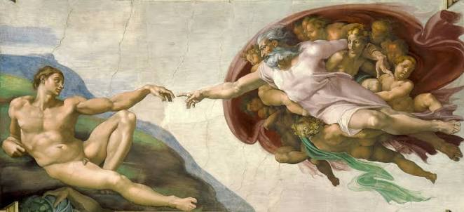
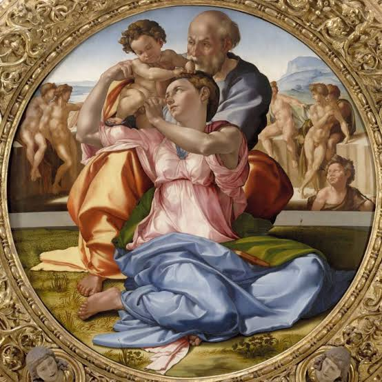
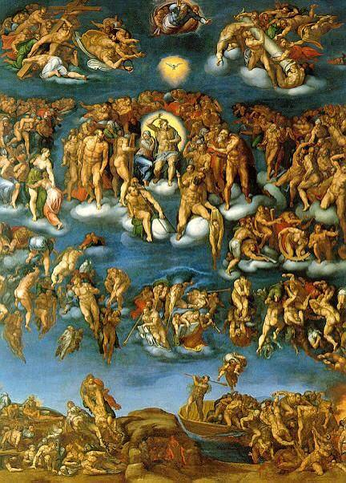
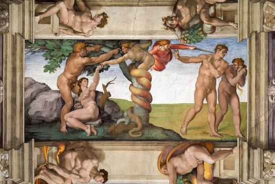
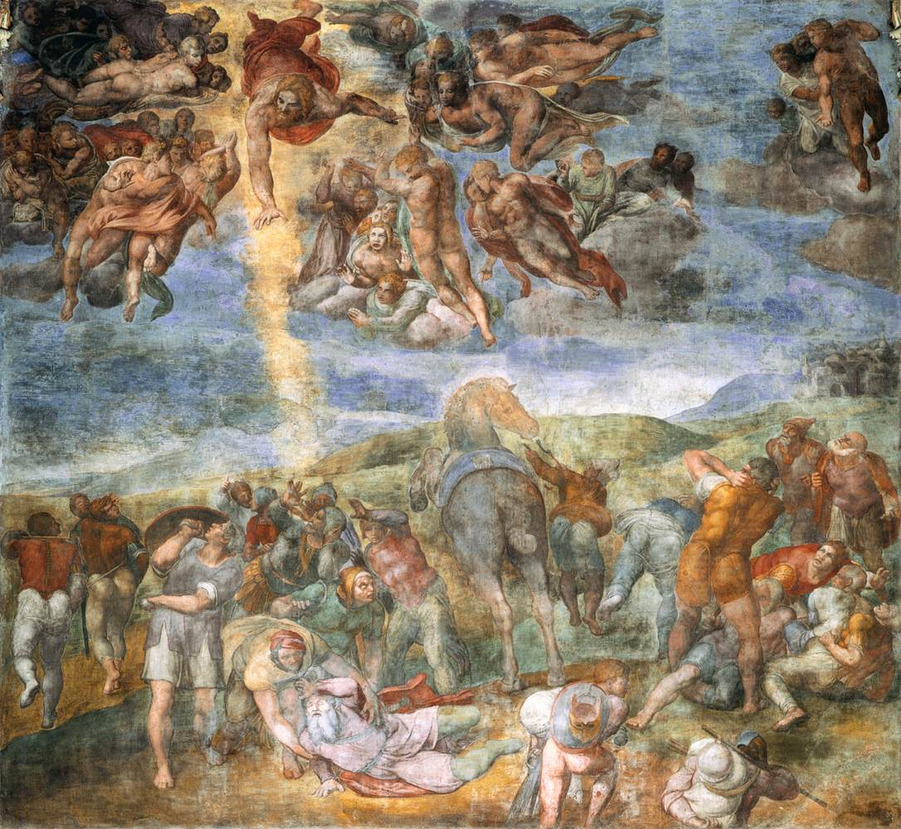
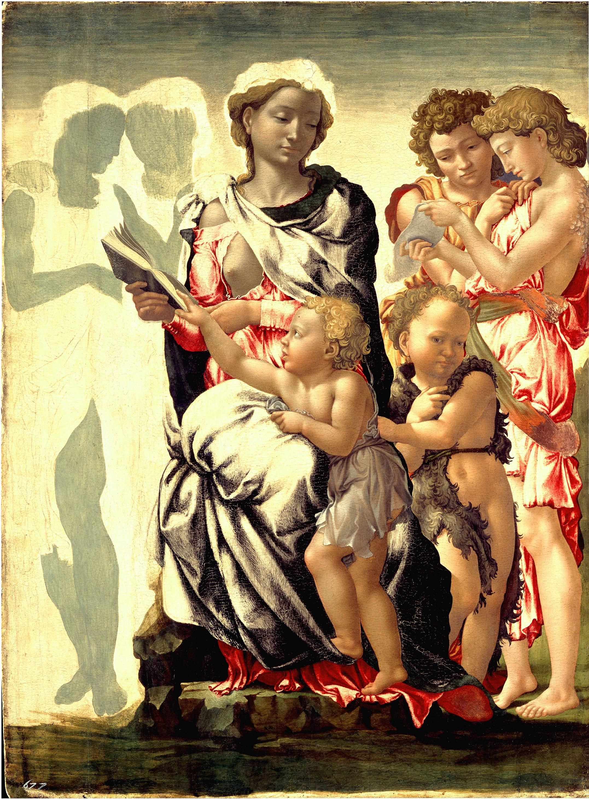

La Creación de Adán
1511 • Fresco monumental
Representación del episodio del Génesis donde Dios da vida al primer hombre.


Tondo Doni
1507 • Temple sobre tabla
La Sagrada Familia dispuesta en una composición circular única en su tipo.


El Juicio Final
1536–1541 • Fresco
Apocalíptica pared del altar que alberga a más de 400 figuras humanas.


El Pecado Original
1510 • Fresco monumental
Representación continua del engaño de la serpiente y el desierto de la expulsión.


Conversión de San Pablo
1542–1545 • Fresco
Fresco encargado por el Papa Paulo III para su capilla privada en el Vaticano.


Madonna de Mánchester
c. 1497 • Tabla inconclusa
Pieza de juventud atribuida al artista que permite apreciar su técnica de dibujo preliminar.